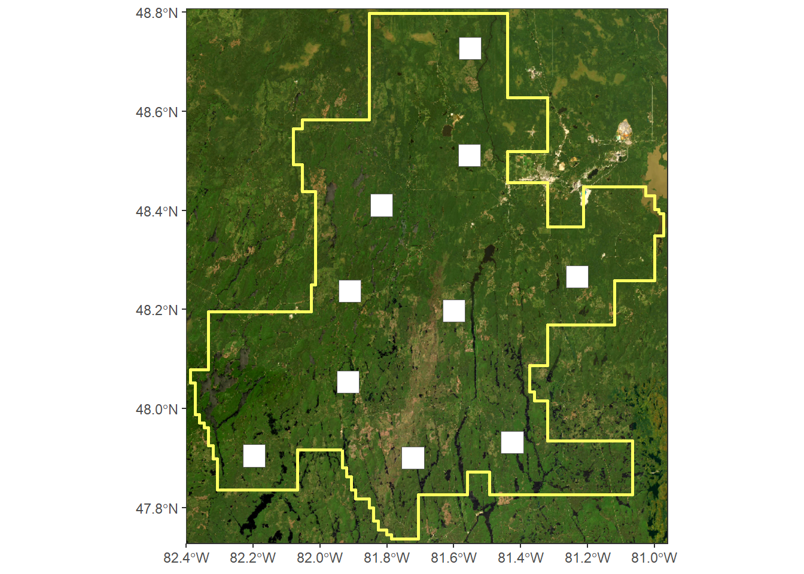
Appendix A : Segmentation parameters optimisation
1 Introduction
This appendix describes the steps to find the optimal parameters of the Generic Region Merging (GRM) algorithm in the Orfeo ToolBox for automatically delineating operationally plausible forest stands. Photo-interpreted forest inventory maps were used as reference data to determine the optimal parameters. The optimization was performed using the symmetric mean absolute percentage error (SMAPE) of polygon density, as well as the overlapping kernel density of polygon stand area and polygon stand shape index at the pixel level. In this appendix, an example is provided for only one forest management unit and one combination of metrics; however, optimal parameters can be determined for any study area and any combination of metrics.
2 Sampling area
Romeo Malette Forest is the forest management unit used for parameter optimization. It is located in Ontario, Canada, and is predominantly coniferous. Ten 5 km × 5 km square areas were used for the subsequent analysis.
To position these areas, only actual forest stands (POLYTYPE == “FOR”) from photo-interpreted forest inventory maps were retained.
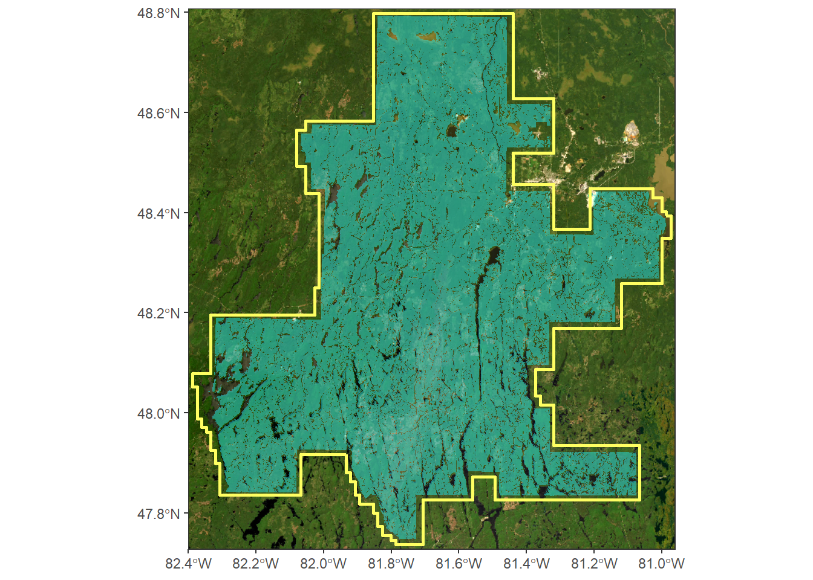
A 500 m buffer followed by a inner 500 m buffer enabled the merging of adjacent forest stands.
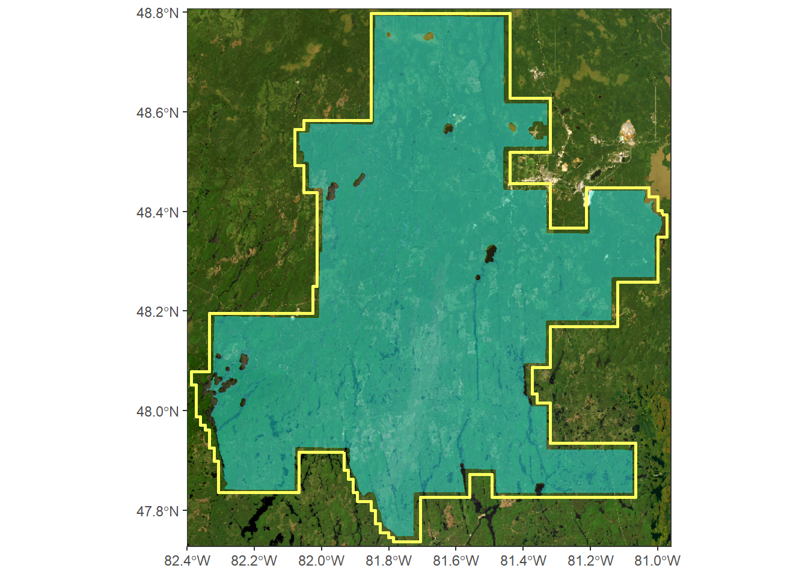
A final inner buffer of approximately 7 km was used to produce final polygons that allowed for the placement of each area’s centroid.
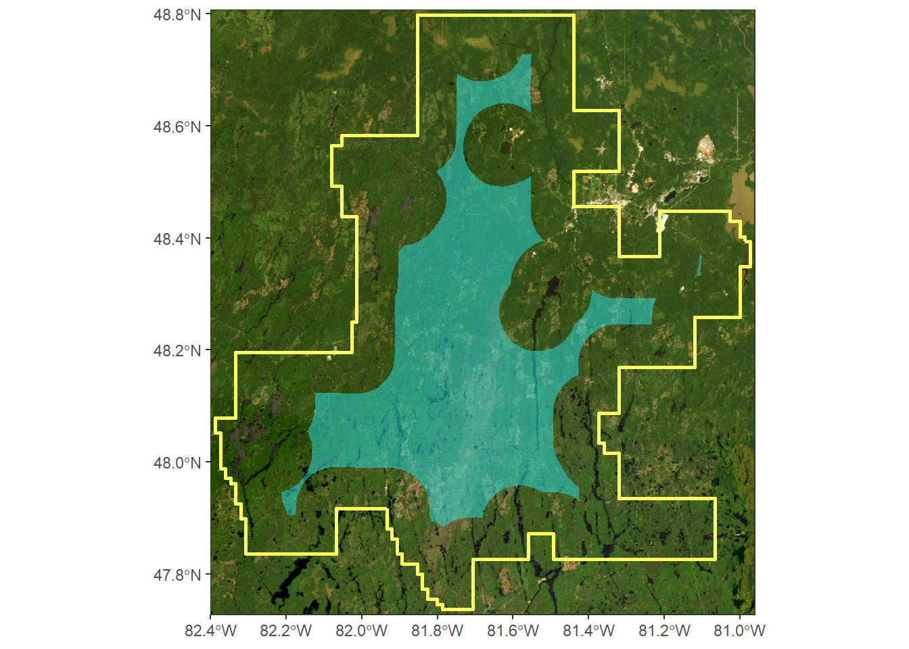
The first area was placed randomly, and then the remaining 9 areas were iteratively placed as far as possible from the previously placed areas. The following figure shows the last placed centroid area in red and the distance raster used to identify the farthest possible position.
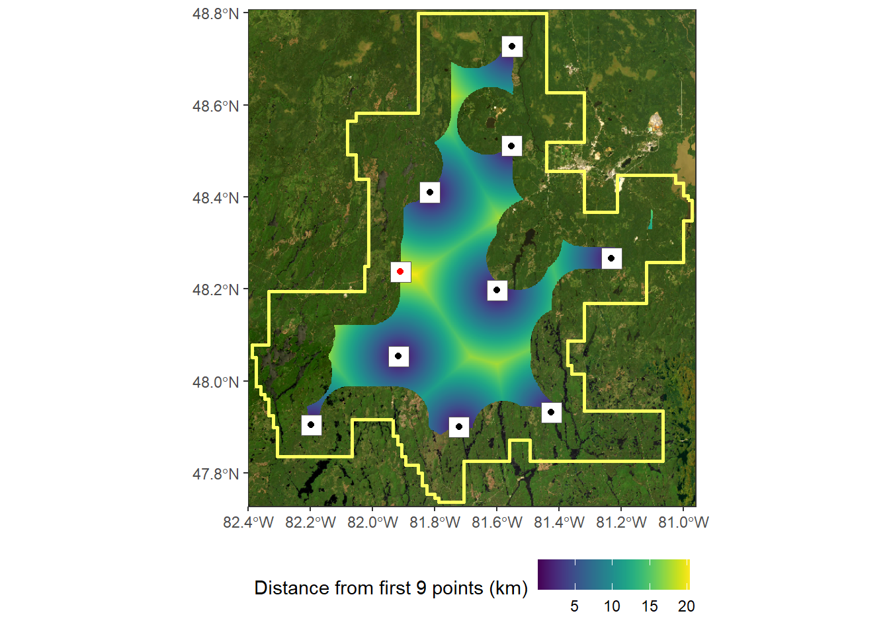
For each area, only actual forest stands (POLYTYPE == “FOR”) were used for segmentation.
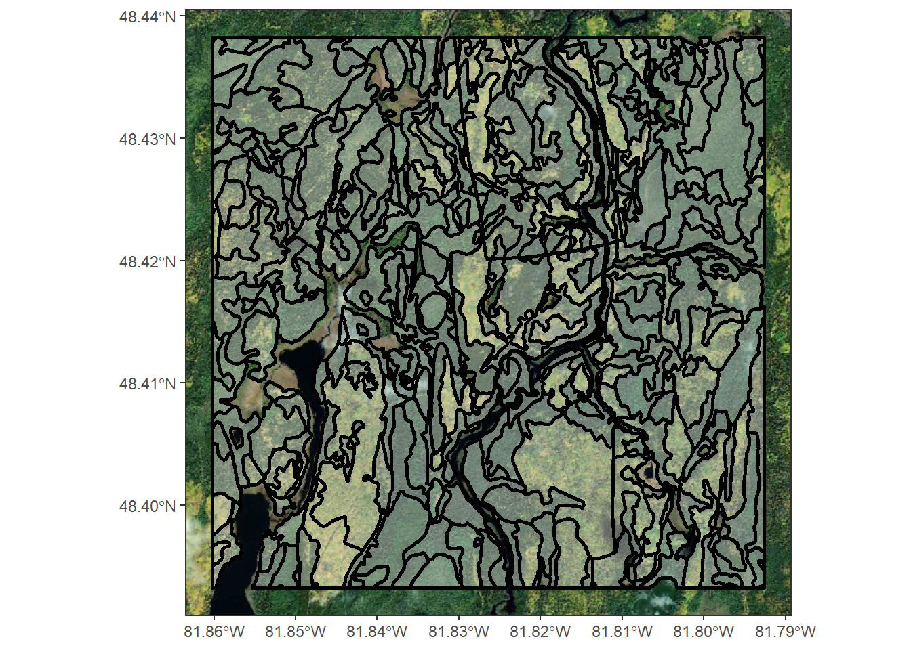
3 Parameters
The parameters tested are the following :
The threshold controls the maximum heterogeneity allowed when merging, controlling how fine or coarse the segmentation is :
- Small threshold → fine segmentation (many small regions)
- Large threshold → coarse segmentation (fewer, larger regions)
- This parameter was tested with values ranging from 10 to 100 in increments of 10
The weight assigned to spectral homogeneity in evaluating spectral similarity (pixel values, band means) when deciding whether regions should merge :
- If high → segmentation will mostly respect spectral values
- If low → spectral similarity matters little, other criteria (shape) dominate
- This parameter was tested with values ranging from 0.1 to 1 in increments of 0.1
The weight of spatial homogeneity gives to shape similarity (compactness and smoothness) when deciding whether regions should merge :
- If high → the algorithm favors compact, smooth regions even if spectral similarity is weaker
- If low → region boundaries will mostly follow spectral homogeneity
- This parameter was tested with values ranging from 0.1 to 1 in increments of 0.1
Thus, a total of 1000 parameters combinations were tested.
4 Segmentation input
The “SPL only” model was used for segmentation parameterization. Theses metrics used in this model are shown in the following figures : * z_p95 → Height of 95th percentiles of returns above 1.3 m * z_above2 → Canopy cover of first returns above 2 m * z_skew → Skewness of returns above 1.3 m
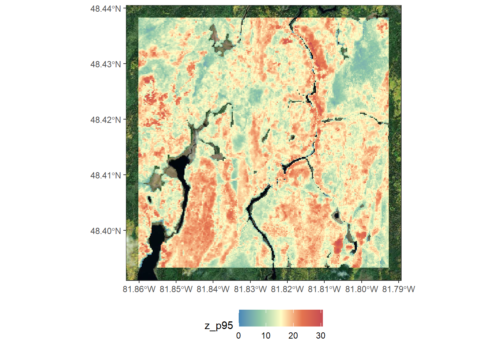
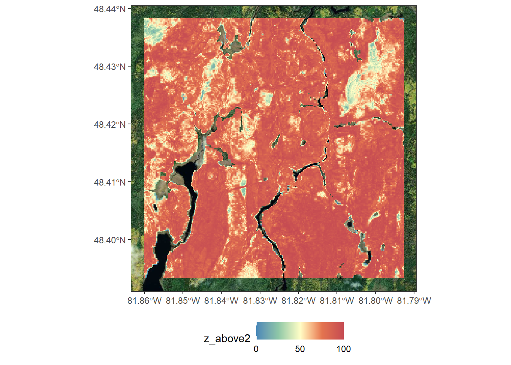
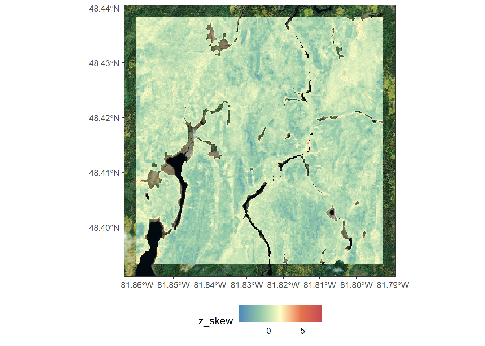
5 Analysis
The three performance metrics are the following :
- Symmetric mean absolute percentage error (SMAPE) of polygon density, determined by this formula :
\[ SMAPE = \frac{\text{Predicted} - \text{Actual}}{\dfrac{|\text{Actual}| + |\text{Predicted}|}{2}} \] Where Predicted is the density of the automated stand delineation polygons and Actual if the density of the photo-interpreted forest inventory polygons. The value is positive when the automated stand delineation has a higher density than the photo-interpreted forest inventory map and negative when it has a lower density. For example, with the best parameters retained in the results, the SMAPE of density is -0.03, as the photo-interpreted forest inventory map has a density of 13.96 polygons/km² (3102 polygons) and the segmentation has a density of 13.58 polygons/km² (2943 polygons).
The following two metrics are computed at the pixel level and are therefore area-weighted.
Overlapping kernel density of the polygon stand area at the pixel level. This performance metric represents how well the distribution of automated stand delineation polygon stand areas matches the distribution of photo-interpreted forest inventory polygon areas
Overlapping kernel density of the polygon stand shape index at the pixel level. The shape index in determined by this formula :
\[ ShapeIndex = \frac{\text{Perimeter}}{2\sqrt{\pi \times \text{Area}}} \]
Similarly, this performance metric represents how well the distribution of automated stand delineation polygon stand shape index matches the distribution of photo-interpreted forest inventory polygon shape indices. The shape index was computed using smoothed polygons to avoid overestimating perimeter.
The assumption underlying this analysis is that automated stand delineations should have the same distribution of polygon area and shape as photo-interpreted forest inventory polygons and therefore represent operationally plausible forest stands.
6 Results
The results presented here are, as mentioned before, for Romeo Malette Forest with the “SPL only” model. The SMAPE threshold is 0.1, which represents approximately 10% variation in polygon density. All sets of parameters that produced SMAPE values outside the range of -0.1 to 0.1 were excluded.
After this step, the optimal parameters were chosen as those that maximized both the area overlap and the shape index overlap. The final score was computed as follows:
1 − (overlap_area + overlap_shape_index) / 2
The best parameter set was chosen as the one with the lowest final score among all combinations with an SMAPE of polygon density of approximately 0.1. In the following figure, the red circles indicate the best parameter sets.
The following figure shows an example of segmentation in Romeo Malette Forest using the “SPL only” model with the best parameters from the previous figure (threshold of 50, spectral homogeneity of 1, and spatial homogeneity of 0.1). There is also an example of a smoothed segmentation, as mentioned earlier.
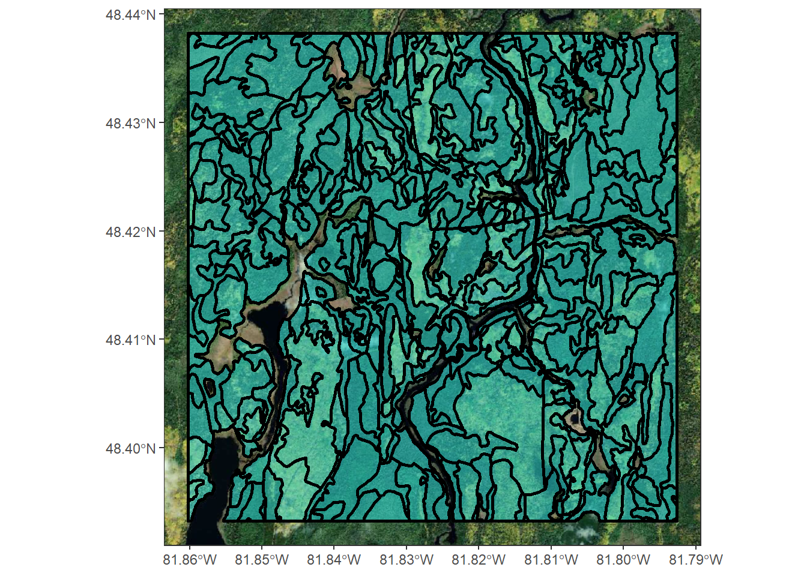
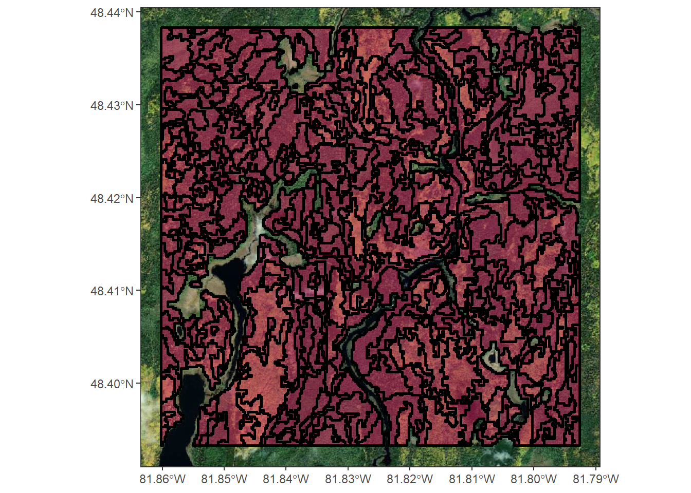
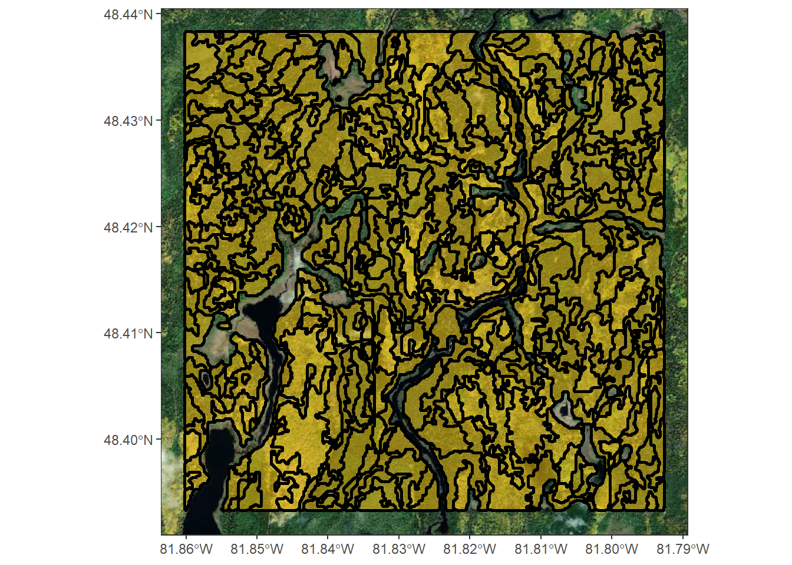
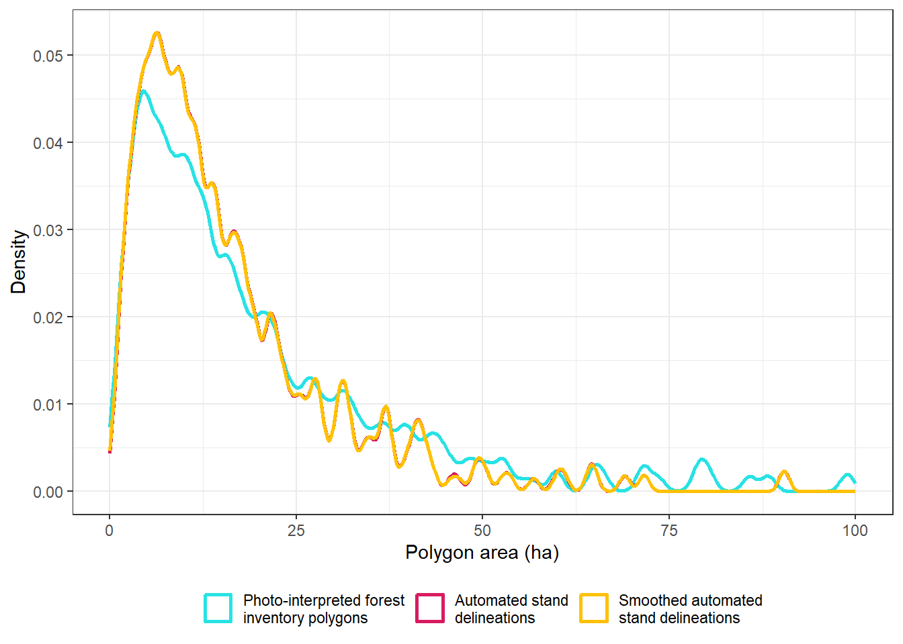
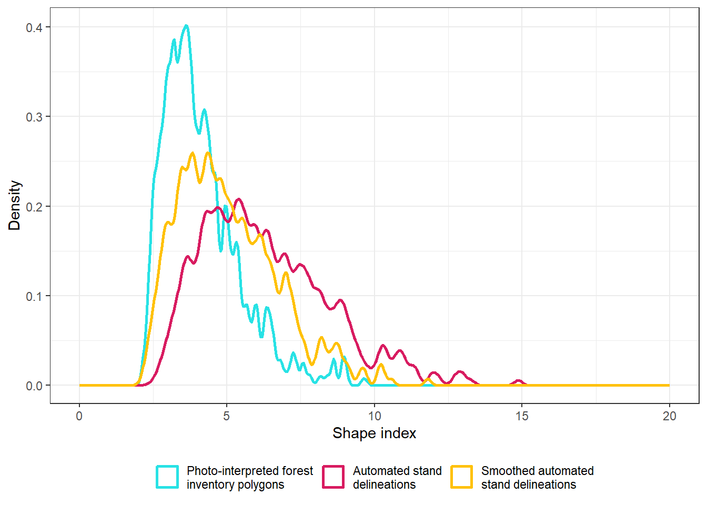